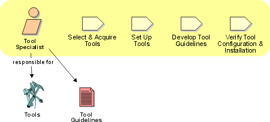

Role: Tool
Specialist
The tool specialist is responsible for the supporting tools on the project.
This includes selecting and acquiring tools. The tool specialist also configures
and sets up the tools, and verifies that the tools work.

Staffing 
An individual playing the role of a Tool Specialist needs to have
a broad set of skills. He needs to understand the underlying processes used
by the project, and for this training might be required prior to project startup.
General systematic analysis skills are beneficial when comparing and selecting
tools for the project. Knowledge of the development platform(s) is required,
on networking issues in particular. A person acting as a Tool Specialist also
needs good communication skills and a 'service-minded' attitude, since she or
he is likely to be a support contact point for the project members, on installation
and other tool troubleshooting issues.
Copyright
© 1987 - 2001 Rational Software Corporation
|  Roles and Activities >
Roles and Activities >
 Tool Specialist
Tool Specialist